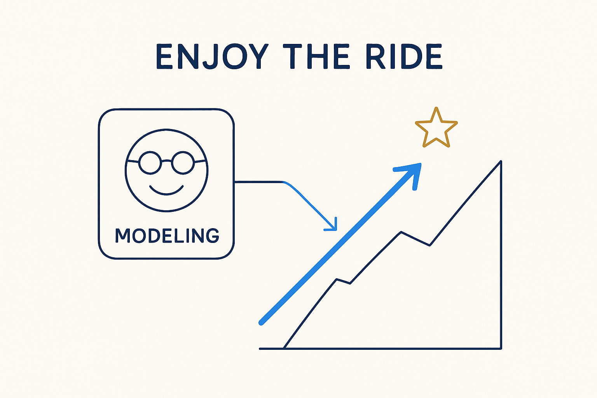

Modeling is also fun — these are exciting times, and we're privileged to have this much new technology and possibility at our disposal. Enjoy the work.

> Modeling is also fun — these are exciting times, and we're privileged to have this much new technology and possibility at our disposal. Enjoy the work.
It is easy to talk about modeling as if it were only rigor and discipline. But let’s not forget the obvious: modeling is fun. Taking a tangled, half-understood domain and finding the structure in it; watching a model generate a working platform; seeing a stakeholder’s face when the picture finally clicks — that is genuinely satisfying work. The discipline is in service of the pleasure, not a replacement for it.
And the timing makes it more so. These are exciting times. We are privileged to have this much new technology at our disposal — AI, generation, visualization, structured knowledge — and the possibilities it opens up are real and new. The people who came before us solved hard problems with far less; we get to build on all of it and go further. That is not a burden, it is a gift, and it is worth enjoying.
Fun is not the opposite of serious. A team that enjoys the work challenges more freely, experiments more, and sustains the momentum that breakthroughs need. Keep the positive energy — no-nonsense, but genuinely glad to be doing this — and the whole approach stays alive rather than dutiful. Do the disciplined thing, and have fun doing it.
Where it lives: the signature principle of Breakthrough Modeling — the energy that keeps it human.